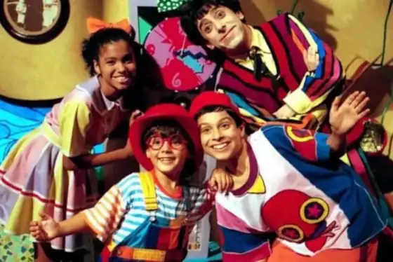
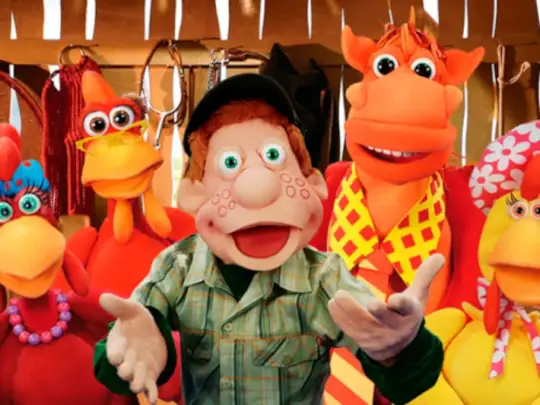
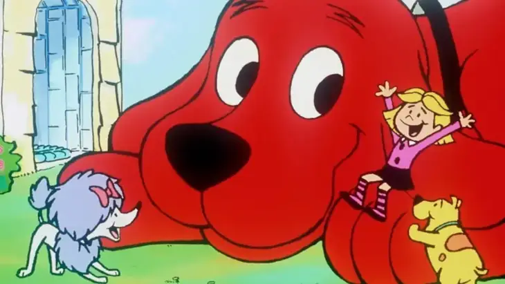
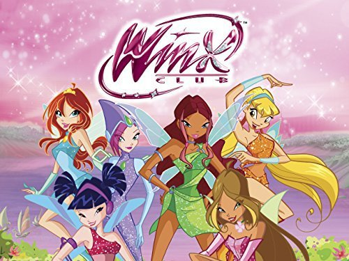

Desenhos que marcou uma gerações
Desenhos animados (ou cartoons) referem-se a uma forma de arte visual, que pode ser uma imagem estática ou uma sequência de imagens criadas para humor, sátira, ou como um filme que usa uma série de ilustrações para criar uma ilusão de movimento. Historicamente, "cartoon" referia-se a um desenho preparatório para uma obra de arte maior, mas hoje o termo abrange desde desenhos humorísticos e charges políticas até filmes de animação, onde uma série de ilustrações individuais é apresentada em rápida sucessão para dar a impressão de movimento contínuo.
Mas para muitos, desenhos são uma lembrança da sua infância, de um dos momentos mais marcantes, que não voltam mais e que são muito especiais. Sempre que vemos as crianças assistindo desenhos, lembramos dos que passavam da nossa época, então vamos lembrar um pouco da nossa infância.
Castelo Rá-Tim-Bum

O "Castelo Rá-Tim-Bum" é um programa de televisão infantil criado por Flávio de Souza e produzido pela TV Cultura, a partir de 1994, sendo uma continuação do programa "Rá-Tim-Bum" (1990). A série conta as aventuras de Nino, um garoto de 300 anos que vive num castelo com seus tios, o cientista-feiticeiro Dr. Victor e a feiticeira Morgana. O programa se diferencia por apresentar um castelo mais moderno e desmistificar os contos de fadas tradicionais, focando na educação e no entretenimento das crianças.
Criação e Início
-
Criação: Flávio de Souza, roteirista e escritor, foi o principal criador da série, que buscava misturar entretenimento, informação e educação para crianças, 1, 6, 14].
-
Precursor: A série "Castelo Rá-Tim-Bum" surgiu a partir da experiência do programa infantil "Rá-Tim-Bum", que foi produzido pela TV Cultura em 1990.
Personagens Principais
-
Nino: Um garoto de 300 anos, aprendiz de feiticeiro, que se sente solitário por não ter amigos de sua idade.
-
Dr. Victor: Tio de Nino, um cientista e feiticeiro.
-
Morgana: Tia-avó de Nino e uma feiticeira de 6.000 anos.
-
Amigos de Nino: Para combater sua solidão, Nino lança um feitiço que traz para o castelo três crianças (Pedro, Biba e Zequinha) e outros amigos, como o entregador de pizza Bongô, a repórter Penélope e o ET Etevaldo.
O pequeno urso

A história do Pequeno Urso (“Little Bear”) começou com os livros da autora Elsie Minarik, inspirada na sua infância, que depois foi adaptada para um desenho animado de sucesso, produzido por Maurice Sendak. A série infantil acompanha as aventuras diárias de um jovem urso, seus pais, e seus amigos da floresta, explorando temas como família, amizade e aprendizado.
Criação e Início
-
Criação de Elsie Minarik: A autora Elsie Minarik criou o personagem do Pequeno Urso, inspirada por suas memórias da infância na Dinamarca e pela sensação de ser amparada e amada.
-
Livros para Crianças: Minarik escreveu os livros entre 1957 e 1968, os quais foram inicialmente distribuídos para os alunos da autora. Os livros são considerados pioneiros ao criar histórias para crianças que vão além de simples cartilhas de alfabetização, abordando as experiências do dia a dia.
O Desenho Animado
-
Produção e Lançamento: O desenho animado foi lançado em 1997, sendo produzido com a colaboração do renomado ilustrador Maurice Sendak.
-
Enredo: A série retrata a vida do Pequeno Urso na floresta, suas interações com seus pais (Papai Urso e Mamãe Urso) e amigos, e suas experiências cotidianas, que podem incluir desafios e momentos fantásticos.
-
Legado: O Pequeno Urso se tornou um dos desenhos animados mais marcantes, lembrado como uma série aconchegante e sensível, transmitida em países como o Brasil pela TV Cultura.
Cocoricó

A história do programa de fantoches "Cocoricó" da TV Cultura começou com o personagem Júlio, do especial de Natal "Um Banho de Aventura" em 1989, e o conceito de um programa numa fazenda surgiu quando o programa original foi cancelado. O programa, com sua estreia em 1996, apresentava a Fazenda Cocoricó, a vida de Júlio e seus amigos animais, e se tornou um marco da TV infantil, com várias temporadas e a introdução de novos personagens e locais.
Criação e Início
-
Criação: Criação do programa "Cocoricó" Inicialmente, a TV Cultura pensou em levar os personagens do programa "Castelo Rá-Tim-Bum" para uma fazenda, mas o projeto "A Fazenda Ratimbum" foi cancelado por falta de orçamento. A equipe de marionetistas foi então convocada para criar uma versão mais acessível dessa ideia, resultando no programa "Cocoricó", que estreou em 1996.
-
Evolução e despedida
-
O programa passou por uma pausa em 2000, e uma nova temporada mais popular foi lançada em 2003.
-
Ao longo das temporadas, Júlio e outros personagens visitaram o apartamento de João, o primo de Júlio, expandindo o cenário para a cidade grande e introduzindo a tecnologia da internet, como é mostrado na enciclopédia livre do site Wikipédia.
-
Apesar de seu sucesso, o programa terminou, deixando um legado de saudade e lembranças da infância para uma geração.
-
A Fazenda Cocoricó e seus personagens
-
O programa se passa na Fazenda Cocoricó, onde o garoto Júlio, que mora na cidade, passa as férias.
-
Ele interage com diversos animais e pessoas, como o cavalo Alípio, as galinhas Zazá e Lilica, e os vilões Dito e Feito, que vivem no paiol.
-
A série se tornou popular por suas músicas e pela forma como abordava temas do cotidiano.
Os camundongos Aventureiros

"Os Camundongos Aventureiros" é uma série de animação sobre os primos Emily (camundonga do campo) e Alexander (rato da cidade), que viajam pelo mundo em um balão para visitar parentes, fazer amigos e resolver mistérios. A série, inspirada na fábula clássica do rato do campo e do rato da cidade, foi produzida pela France Animation e Cookie Jar Entertainment, com exibição original na HBO e, no Brasil, pela TV Cultura.
Criação e Início
-
Inspiração: A série é inspirada em uma fábula infantil clássica que narra a história do rato do campo e do rato da cidade, onde o primeiro vai visitar o segundo na cidade.
-
Produção: A série foi produzida pela France Animation, Cookie Jar Entertainment e HBO.
-
Exibição Original: Foi exibida na HBO entre abril de 1998 e outubro de 1999.
-
Exibição no Brasil: A série foi transmitida no Brasil pela TV Cultura.
-
Personagens: Os protagonistas são Emily, uma ratinha do campo, e seu primo Alexander, um rato da cidade, ambos originários dos Estados Unidos.
-
Episódio Perdido: Um episódio piloto, que nunca foi exibido no Brasil, inicia as aventuras dos personagens e mostra os humanos donos da casa de Emily e o chefe do restaurante onde Alexander morava.
-
Fábula Adaptada: O especial de Natal de 1993, que serviu de base para a série, retratava Emily e o rato do campo visitando a cidade, e não o contrário, o que gerou confusão para o público brasileiro, que não viu este episódio piloto.
7 Monstrinhos

A série infantil Os 7 Monstrinhos (ou Seven Little Monsters) conta a história de uma família de monstrinhos que vivem em Centerville, EUA, sob os cuidados da mãe, enfrentando os desafios da infância com inteligência e união, mas também com muitos contratempos. Cada um dos sete irmãos tem personalidades e aparências monstruosas distintas, e a série, criada para a TV, foi baseada em um curta de animação que serviu de inspiração para o programa infantil canadiano-chinês-filipino.
Criação e Início
-
Criação: A série surgiu de um curta de animação para o programa infantil Vila Sésamo, em 1971.
-
Contexto: Serviu como base para uma produção televisiva canadense-chinesa-filipina de mesmo nome, que foi ao ar de 2000 a 2003.
-
Personalidades e Feições: Cada um dos sete irmãos possui características físicas e traços de personalidade únicos, o que os diferencia, mas também os torna mais unidos na resolução de seus problemas.
-
A Família: Eles moram juntos em um mesmo lar, sob os cuidados da mãe, e o programa foca em suas aventuras, aprendizados e superação de desafios do dia a dia de forma engraçada.
Clifford

A história de Clifford começa com o escritor Norman Bridwell, que teve a ideia de um cão gigante de infância e, após várias rejeições, publicou o primeiro livro de Clifford, o Grande Cão Vermelho, em 1963. A trama principal gira em torno de Emily Elizabeth e o seu adorável, mas colossal, cão vermelho, Clifford, que cresceu muito mais do que o esperado devido ao amor dela. Juntos, eles vivem aventuras e aprendem lições de vida, mudando-se para a Ilha Birdwell e explorando o mundo com seus amigos, o que tornou a série um sucesso e a tornou a primeira série infantil da PBS.
Criação e Início
-
Criador: Norman Bridwell era um artista comercial que, após receber diversas rejeições de editoras, criou a história do Clifford, que se tornou um sucesso, mesmo após um ano de desenvolvimento. A inspiração de Bridwell veio de um desejo de infância de ter um cachorro grande como um cavalo.
-
O Início da História A história de Clifford começou com uma pintura do que se tornaria Clifford, o Grande Cão Vermelho, que Bridwell incluiu em um portfólio de ilustrações para livros infantis em 1962. A primeira história de Clifford foi publicada em 1963, e os livros continuam a ser um sucesso, com Clifford a ensinar lições de vida às crianças.
As Aventuras de Clifford
-
Clifford é um cão vermelho gigante, e as histórias acompanham a sua vida com a sua dona, Emily Elizabeth, e os seus amigos caninos, como T-Bone e Cleo, que se tornaram parte de diversos programas infantis da PBS Kids.
-
A magia de Clifford é que ele dá um toque extraordinário a uma situação comum, com Clifford a dar um exemplo para as crianças, ensinando sobre crescimento e aprendizagem, além de demonstrar o valor da gentileza, da compreensão e do senso de humor.
-
Os livros e as séries de televisão de Clifford ensinam aos leitores que cada personagem enfrenta desafios e os supera, tornando-se melhores pessoas ou animais de estimação no processo.
3 Espiãns demais

A série animada 3 Espiãs Demais segue Sam, Clover e Alex, três adolescentes de Beverly Hills que equilibram suas vidas escolares com o trabalho secreto para a WOOHP (Organização Mundial de Proteção Humana), uma agência de espionagem liderada por Jerry, que as recruta para combater criminosos bizarros e proteger o mundo. A história se baseia em como as jovens, com seus acessórios de espionagem e macacões de látex coloridos, lutam contra vilões enquanto lidam com os dilemas da adolescência, como relacionamentos, amizades e a inimiga Mandy.
Criação e Início
-
Ideia Inicial: O desenvolvimento da série começou nos anos 90 com a ideia de criar uma animação de ação para o público feminino, que era um nicho pouco explorado na época.
-
Parceria: A Marathon Productions fez uma parceria com os criadores David Michel e Vincent Chalvon-Demersay para desenvolver projetos de animação, e "Três Espiãs Demais" foi o primeiro grande resultado dessa colaboração.
-
Influência de Anime: A série incorporou elementos de animes japoneses para atrair o público e dar um estilo único à animação, o que contribuiu para o seu sucesso.
-
Produção: Um piloto foi produzido nos anos 90 e exibido em 1999 como um comercial promocional.
-
Estreia Mundial: A série estreou no verão de 2001 no Fox Family nos Estados Unidos.
-
Exibição no Brasil: A animação chegou ao Brasil em 2002, conquistando grande popularidade na época.
-
Contexto: Ao mesmo tempo que as adolescentes Sam, Alex e Clover viviam suas aventuras de espionagem, o desenho também explorava suas rotinas escolares e amizades, tornando-se um fenômeno de entretenimento.
Winx

As fadas do Clube das Winx foram criadas por Iginio Straffi e a série animada estreou em 2004 como uma coprodução entre a italiana Rainbow S.p.A. e a Nickelodeon. A ideia original surgiu em 1999 com o nome Magic Bloom, e a produção do episódio piloto começou em 2000. A primeira temporada foi exibida na Itália em 2004, seguindo as aventuras de Bloom e suas amigas fadas em Alfea.
Criação e Início
-
Criador: Iginio Straffi.
-
Início da ideia: Em 1999, com o nome "Magic Bloom".
-
Produção: A produção do episódio piloto começou em 2000
-
Nome: O nome mudou para "Winx, Solo le Fate" (Winx, Apenas Fadas) em 2002 e, finalmente, para "Winx Club" em 2003.
-
Estreia: A série estreou oficialmente em 2004, na Itália.
-
Coprodução: Foi uma coprodução entre a Rainbow S.p.A. e a Nickelodeon.
-
Enredo: A primeira temporada acompanhou Bloom, uma adolescente da Terra que descobre ter poderes mágicos e se matricula na escola Alfea. Lá, ela conhece Stella, Flora, Musa e Tecna, formando o Clube das Winx para enfrentar as bruxas Trix e outras ameaças.